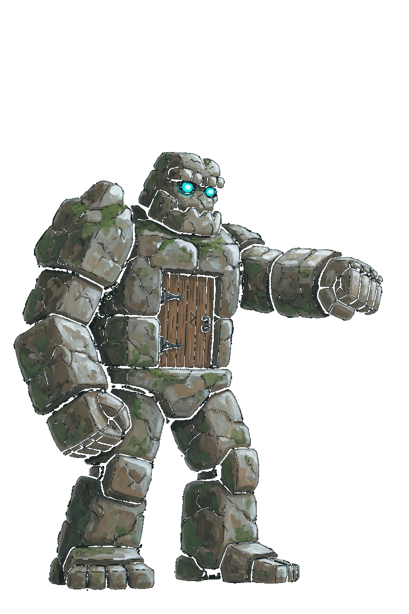
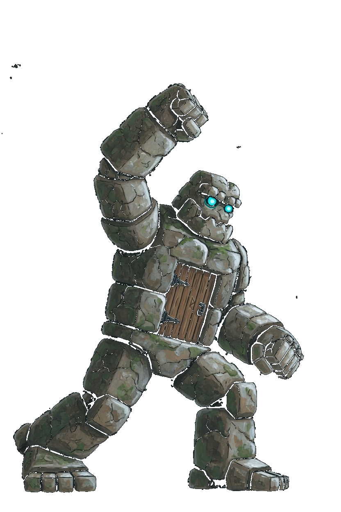
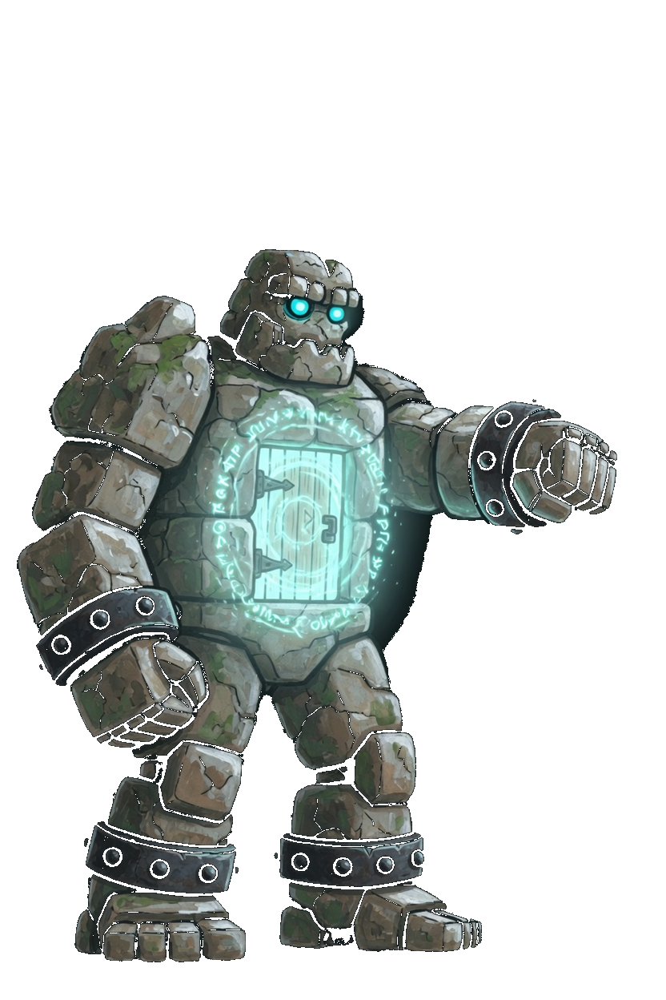
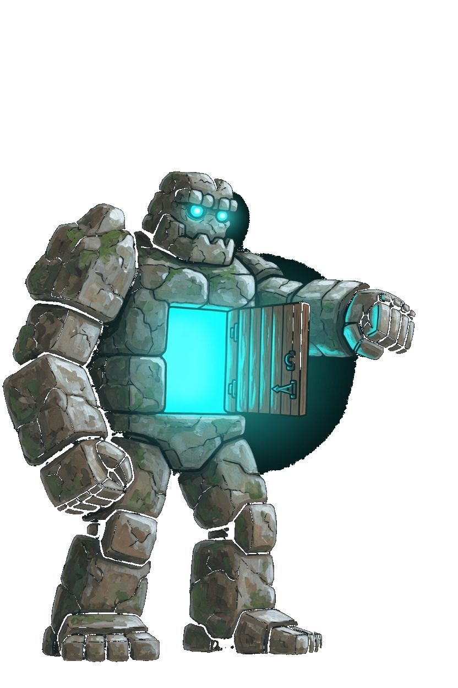
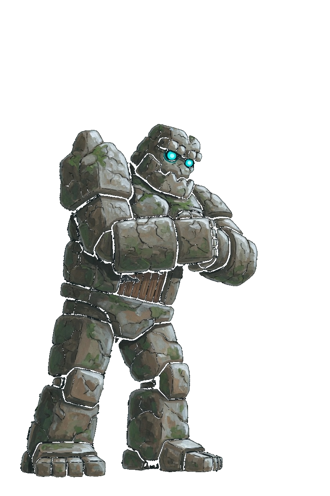
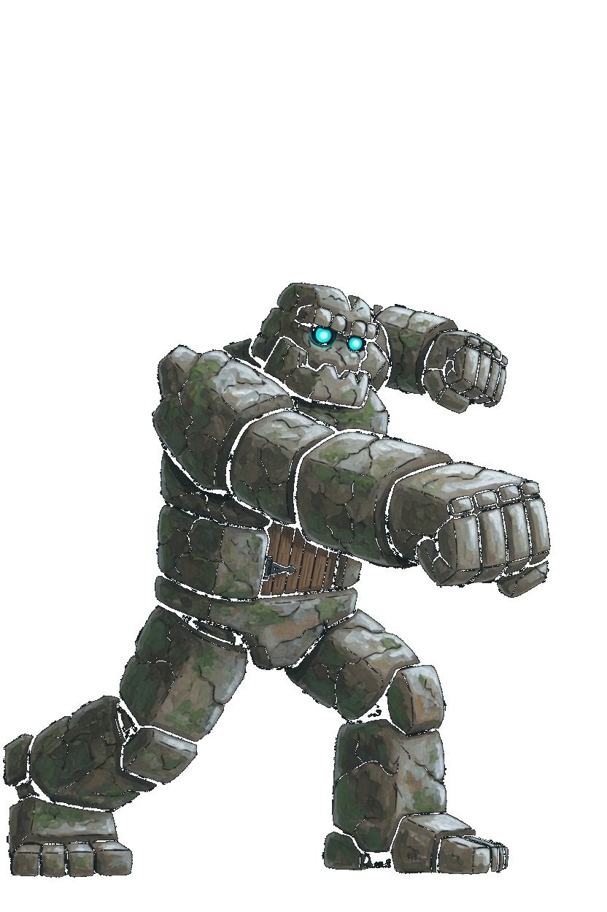
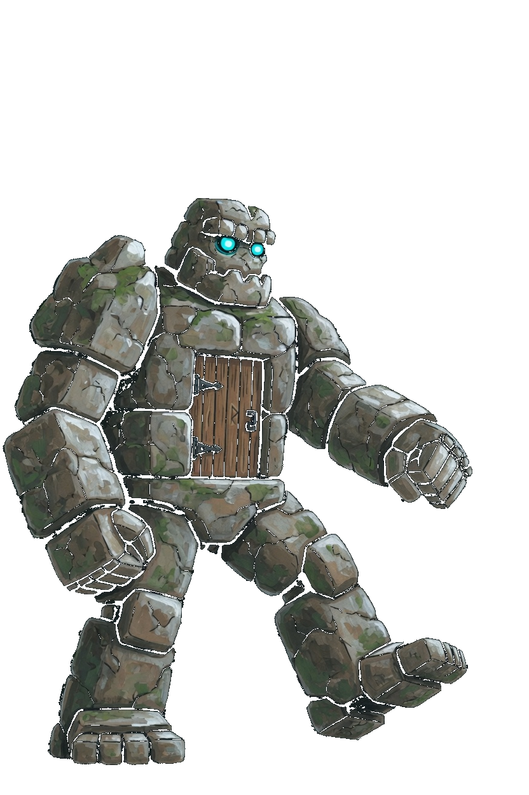
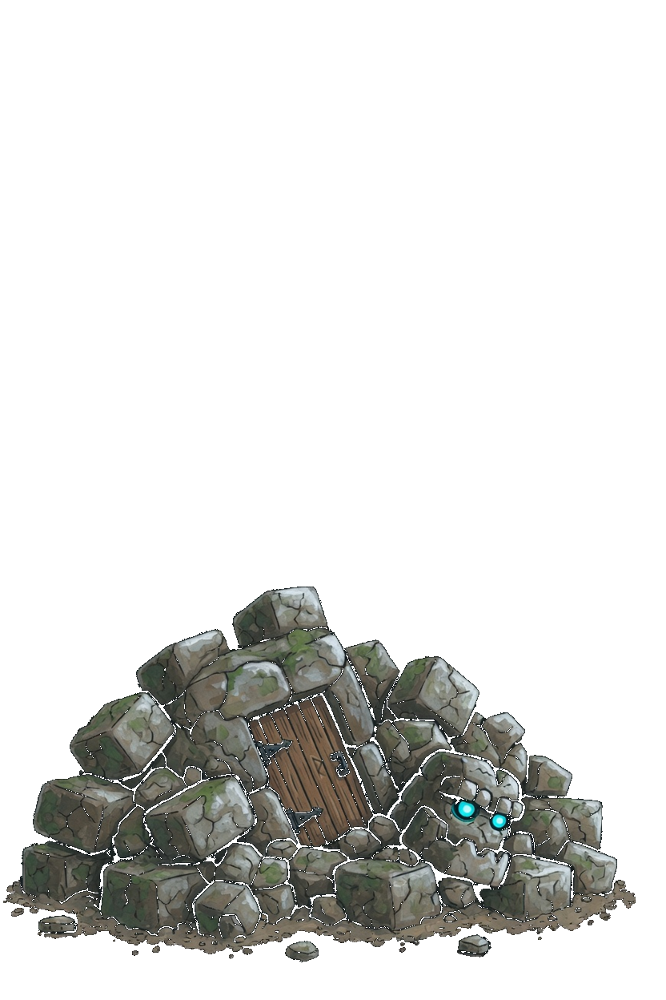
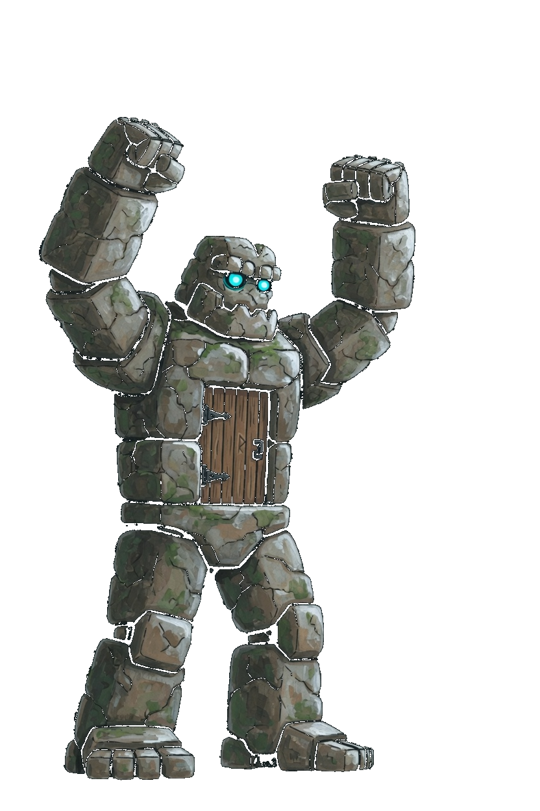

Gate · Nexus Guardian
This card is the only pose list. A later frame has to match one of these keys. Native facing is right. The whole sprite flips. Stone body, wooden chest door, cyan eyes. The feet are the foot line. Gate is a fist, so the corner step is Close. There is no move named Dash and no Slip key. Gate Slam, Gate Ward, Call the Wards, and Gate Haul keep those book names. One Gate Slam clip covers the auto and the aura.
| Book | Value |
|---|---|
| Basic | Gate Slam · range 1.9 |
| Body | 1020 health · 40 damage · 0.60 attacks/s · speed 1.6 · armor 7 · range 1.9 · mana 80 · regen 5 |
| Crit / cooldown | 0.08 crit · 0.94 cooldown scale |
| Cards | Iron · Thorns · Giant |
| Moves | Gate Slam · Gate Ward · Call the Wards · Gate Haul |
| Stride | Close · a fist · 30s · cost 8 |
What stays off the body
- Gate Slam's ring is the ground sigil. The raised fist stays on the body.
- Gate Ward is the pale ring on the door. The book name stays Gate Ward.
- Call the Wards opens the chest door. No extra warden is painted on the sprite.
- Gate Haul pulls with both fists. There is no rope and no second creature.
Keys

Idle
Still golem, door shut, forward fist out, both feet on the foot line.

Gate Slam
Idle, then the fist rises, then idle. 0.50s. Auto and aura share this clip.

Gate Ward
Idle, then the pale ring sits on the door, then idle. 0.50s.

Call the Wards
Idle, then the chest door opens on cyan light, then idle. 0.52s.

Gate Haul
Idle, then both fists pull in, then idle. 0.50s.

Close
A lunge toward the right, then idle. 0.35s. Corner step only.

Walk
Idle, then one stride. 0.72s. The lifted foot stays on the leg.

Death
One rubble pile in the lower portion. The door and the eyes stay in the pile. 1.55s.

Win
Both fists rise. The feet stay down. 1.15s.